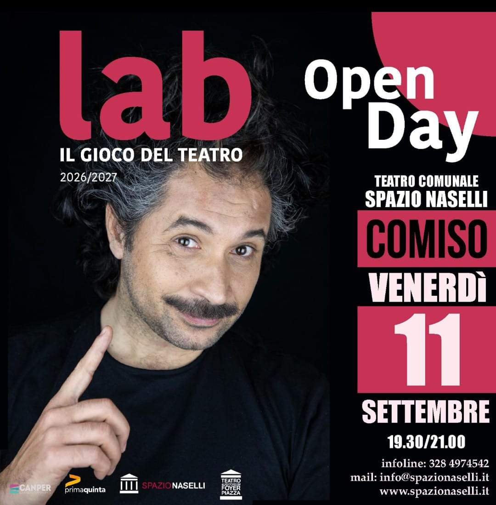

Il Gioco del Teatro
Il laboratorio teatrale a cura di Aldo Rapè al Teatro Naselli di Comiso. Il respiro come punto di partenza per il lavoro dell'attore, l'ascolto di sé e del compagno, l'attenzione a ciò che ci circonda.
Il teatro diventa uno strumento di connessione con se stessi, con gli altri e con il mondo, attraverso un percorso che unisce scoperta, espressione e condivisione.
Il laboratorio, della durata di otto mesi con un appuntamento intensivo al mese, propone un approccio ludico all'arte teatrale. Un gioco serio, ma pur sempre un gioco, senza dimenticare che siamo stati tutti bambini.
Il percorso sarà arricchito da alcuni interventi di docenti esterni e si concluderà con uno spettacolo finale al Teatro Naselli. Gli allievi avranno inoltre la possibilità di essere coinvolti negli eventi annuali di PRIMAQUINTA.

Il programma
Respirazione e consapevolezza
Dizione e uso della voce
Movimento scenico
Improvvisazione teatrale
Recitazione
Spazio e tempo scenico
Quote di partecipazione
Adulti
60 € al mese
Minori
35 € al mese
Iscrizione annuale
20 € una tantum
È previsto uno sconto del 25% per gli iscritti appartenenti allo stesso nucleo familiare.
Un invito a mettersi in gioco, riscoprire il piacere dell'ascolto e vivere il palcoscenico come luogo di incontro e scoperta.